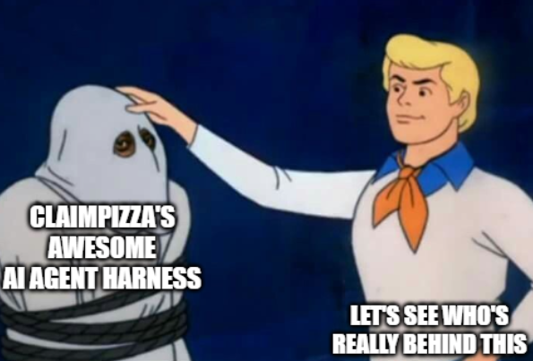
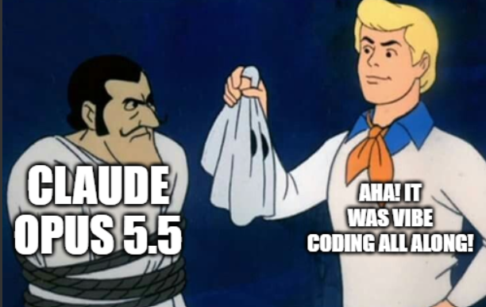

Four teams got the same two agents, nine tools and fifteen tickets. Everyone can make the happy path work. We spent our time on the paths that are not happy: the wrong agent, two requests in one message, a withdrawn claim, a process that dies halfway through a payment.
$ python -m app run examples/training/T08.jsonRECEIVED → ROUTED router: claims (a guess, never final) ROUTED → GATHERING agent reads invoice + prescription GATHERING → EVALUATING facts frozen EVALUATING eligibility ✓ duplicate ✓ calc €1 640.00 EVALUATING → AWAITING_AUTHORIZATION 1 640 > 1 500 · proposal frozen$ python -m app run examples/events/insurer_approved.jsonAWAITING_AUTHORIZATION → EXECUTING stored call, no model ledger create_claim PENDING → DONE EXECUTING → COMPLETED outcome=paid# same run_id, same log, one payment. (illustrative)
Most harnesses ask "how do we get the model to do the right thing?" We asked "what is the model allowed to do at all?"
| Concern | Baseline | Prompt-only approach | pizzaclaim |
|---|---|---|---|
| Who sets the agent state? | Guessed from final JSON | Model, via prompt | Code, at every step |
| Reimbursement math | Model | Model + tool | Deterministic, in cents |
| Clarification reply | Rejected | New request | Resumes the same ticket & log |
| Approved by insurer | — | Model rebuilds the call | Executes the frozen proposal |
| Process crash mid-payment | Pay again | Pay again | Write-ahead ledger, never twice |
| Wrong agent | Final answer | Handoff loop | Max one reroute, never closes |
| "Do A and B" | Does both, or neither | Unpredictable | A done, B named as not handled |
Hybrid by design: code owns the phases and transitions. Inside a phase the model gets a phase-scoped tool set and its skills. It extracts facts and phrases the reply. Nothing else.
StateMachine.transition() refuses any move that is not in the table.
Terminal states never move again. Every state maps to exactly one of the six logged agent states.
Rule: one ticket handles one operation. Anything else is noted, not carried out, and the customer is told to send it separately.
other_requests (B).UNHANDLED_NOTE is appended when other_requests is not empty.request: "Reimburse invoice INV-2026-008 and please move me to my new address." category: reimbursement_request other_requests: ["address change"] ✓ Your invoice has been reimbursed: €180.00. ! Not handled, to be sent separately: address change.
Every write goes through a write-ahead ledger that is saved before the domain is called. A reply can arrive in a new process, days later. The ticket picks up exactly where it stopped.
| Crash after… | On restart |
|---|---|
| step 1 | Nothing written. Run normally. |
| step 2 or 3 | create_claim is not idempotent → look it up by provider + invoice no + year before calling again. |
| step 4 | Entry is DONE → return the stored result. A successful write is never repeated. |
Each one is a test. Pure checks in app/checks: no I/O, no model, no flakiness.
no_change, even if a reroute was pending.test_withdrawal_wins_over_a_reroutepayment_failed.
